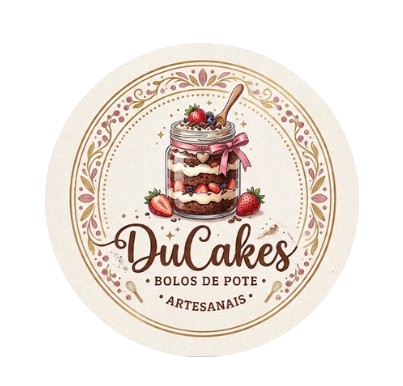

Missão
Proporcionar momentos de felicidade através de sobremesas artesanais de alta qualidade, preparadas com afeto, praticidade e ingredientes selecionados.

A DuCakes nasceu da paixão pela confeitaria artesanal e do desejo de levar momentos doces e especiais para o dia a dia das pessoas. Especializada em bolos de pote frescos e recheados com carinho, nossa empresa preza sempre pela alta qualidade dos ingredientes e pelo sabor inconfundível do preparo caseiro.
Proporcionar momentos de felicidade através de sobremesas artesanais de alta qualidade, preparadas com afeto, praticidade e ingredientes selecionados.
Ser a marca referência em bolos de pote e confeitaria artesanal na região, reconhecida pelo sabor autêntico, inovação nas receitas e excelência no atendimento ao cliente.
Acompanhe o nosso trabalho e venha conhecer o nosso espaço de produção:
Endereço: Loja Online
Atendimento: Segunda a Sábado, das 09h00 às 18h00
E-mail Institucional: contato@ducakes.com.br